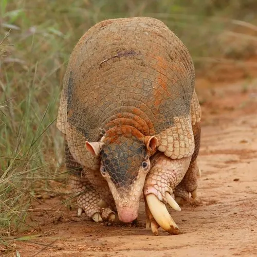

哺乳动物 · 动物界
大犰狳 Priodontes maximus

现存体型最大的犰狳，体长可逾一米、体重超过 50 千克，前爪巨大如钩，能掘开坚硬的白蚁丘，因栖息地丧失而被列为易危。
- 分类
- 门脊索动物门纲哺乳纲目有甲目科犰狳科属大犰狳属
- 栖息环境
- 热带雨林边缘、稀树草原、河岸林与湿地附近的沙质土壤
- 地理分布
- 南美洲亚马逊以南，从委内瑞拉、巴西至阿根廷北部的分散分布区
- 保护级别
- IUCN 易危（VU）；CITES 附录Ⅰ
物种志
大犰狳是现存最大的犰狳，成年体长 75–100 厘米，尾长 50 厘米左右，体重 20–50 千克，圈养个体更重。全身覆盖数十片骨质甲板，环带多达 11–13 条，背甲深褐至灰褐色，腹面与四肢内侧浅黄；头部窄长呈漏斗状，眼小耳小，最惊人的是前足第三趾的巨爪，可长达 20 厘米，弯曲如镰刀。
它们栖息于南美洲热带雨林边缘、稀树草原与河岸森林，多在夜间单独活动，用巨爪掘开白蚁丘和蚁巢，靠长而黏的舌头卷食白蚁与蚂蚁，也捕食蠕虫、昆虫和腐肉。大犰狳掘洞能力极强，一夜可挖数个洞穴，洞穴常被其他动物二次利用。它视力很差，主要依靠嗅觉和听觉，遇险时不是蜷球，而是迅速钻入洞中或站起用前爪反击。每胎通常 1–2 仔，孕期约 4 个月。因被大量猎食、栖息地开垦及低繁殖率，其种群持续下降。
形态与习性
- 体长约 75–100 cm，尾长约 50 cm
- 体重约 20–50 kg，圈养个体可更重
- 前爪第三趾爪可长达 20 cm，弯曲如镰刀
- 食性白蚁、蚂蚁为主，兼食蠕虫、其他昆虫与腐肉
- 繁殖孕期约 4 个月，每胎 1–2 仔
- 活动节律夜行性，一夜可挖掘数个洞穴
- 寿命野外约 12–15 年，饲养下可超过 20 年
趣味知识
- 大犰狳的前爪长达 20 厘米，能像铲子一样掘开坚硬的白蚁丘。
- 它的洞穴常被狐狸、蜥蜴甚至其他犰狳二次占用。
- 它视力极差，捕猎和避敌几乎全靠嗅觉与听觉。